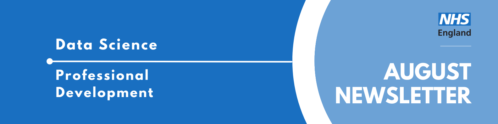

Professional Development Newsletter August 2024

Welcome to the latest Professional Development newsletter, brought to you by the Data Science skilled team Professional Development Functional Team.
The newsletter team are always happy to receive constructive feedback, and we invite you to send us any contributions you may have.
There are some legacy NHS Digital items which we have identified with❗
If you cannot access something of interest to you, please reach out.
Thanks for reading! – PD newsletter team
HACA 2024: Relive the experience
HACA 2024: Relive the experience
Couldn’t make the event in person? Had to pick between two presentations on at the same time? No worries - the Health and Care Analytics conference hosted in July recorded all their presentations and has now uploaded them onto their YouTube channel, and can be easily accessed from their site.
HACA was also full of amazing posters on a wide range of topics, so many it was hard to read them all! You can check out the posters on their site as well.
Events
Lots of exciting things coming up! See the full calendar here❗, and a small selection below.
Code Dependent - Data Ethics and Society Reading Group
Wednesday 4th September, 13:00-14:00, Teams
We will be discussing Code Dependent by Madhumita Murgia:
The lives of a British poet, an Uber Eats courier in Pittsburgh, an Indian doctor, and a Chinese activist in exile are linked by their unexpected encounters with AI. In this book Madhumita Murgia, AI Editor at the FT, highlights the voices of ordinary people, to show how automated systems are reshaping lives all over the world, from technology that marks children as future criminals to an app that is helping to give diagnoses to a remote trial community.
See our GitHub page for more information. Registration closes Friday 23rd August 17:00
Health Data Science Seminar Series: Transforming Healthcare: AI in Health Data Science
Thursday 12th September 2024, 14:00 - 15:30, Teams
This series of seminars presents an exciting opportunity to hear about recent developments in health data science, generate ideas and help build the health data science community. It is hosted by the ONS’s Data Science Campus and Health Analysis Team in partnership with Health Data Research UK (HDR UK).
The Health Data Science Seminar series provides a dedicated space for data scientists, policymakers, health professionals, academics, epidemiologists, statisticians and other members of the data science community to come together and explore the potential of data science, to help improve health and health policy.
This event will feature presentations from guest speakers including:
Dr Siegfried Karl Wagner - Ophthalmologist and senior research fellow, University College London Professor Christopher Yau - Professor of Artificial Intelligence and Turing AI Fellow, University of Oxford
Python ELT with dlt: Zero to Hero workshop
Thursday 19th September, Thursday 26th September, 17:00-19:00, Online
A zero-to-hero workshop for learning ELT, dlt and advanced features around it. The goal is to have you walk away with the ability and understanding to build robust ELT pipelines. This will essentially upskill your Python EL ability from just learning to senior data (platform) engineer level.
This is a two-part workshop, with a target audience of data platform engineers, Python First data engineers, and Python normies who want to learn best practice data engineering.
Data Science Festival: Oktoberfest
Saturday 19th October 2024, 9am-5pm, CodeNode London
Apply for a FREE ballot entry to this years DSF Oktoberfest. Top tech speakers, incredible partners and a thriving community. There will be a mixture of talks featured at the festival, covering all things data (science, engineering, etc) and a variety of technical levels.
NHS RPySOC 2024 Conference
Thursday 21st-22nd November, 9am-5pm, in-person (Birmingham) / Online
The NHS RPySOC 2024 conference is open for registration now! It will be on 21st & 22nd November in Birmingham. This is jointly hosted by the NHS R Community and NHS.pycom, and also promotes Open Source.
- Day 1 will be a mixture of presentations, workshops and lightening talks
- Day 2 will be ‘Unconference’ with suggestions for topics being taken on day 1.
It’s a great chance to show off our work, share our learning with a like minded community and learn a few things yourself, such as the state of the industry and how techniques are being applied elsewhere.
You can either attend:
- In-Person (The ICC, Hall 11, Birmingham B1 2EA (Sold Out: Waiting List Only)
- Online
See more future events on our confluence calendar❗
Know of any events we should feature next month? Let us know by clicking the “Contribute” button, or here.
Data Science Discussion: Democracy
Recently, we held another Data Science Discussion, where we encourage people to look into a different area or use case of data science than they might strictly look at in their day job and spark discussion on a peer-to-peer level.
This time we delved into the intriguing topic of data science and democracy, hosted by Mia Noonan.
Mia kicked off the discussion by asking the group to consider the different ways data science could interact with and potentially reshape the political landscape. One of the key ideas presented was the concept of AI-driven profiles that could be created based on an individual’s opinions and values, with the potential to vote on bills and acts on their behalf. This led to a lively debate on the implications of such a system, and what type of democracy we’d like to see AI help facilitate- representative, direct or deliberative.
Throughout the session, the group expressed a healthy dose of skepticism, particularly regarding the biases inherent in large language models (LLMs) and AI systems. Concerns were raised about the potential for AI to reflect and even exacerbate existing biases, as well as the broader implications for democracy and personal agency. The discussion highlighted the complex and often controversial nature of combining AI with politics, but also the potential for innovative applications that could transform how we engage with governance.
The Professional Development Functional Team is excited to continue hosting these monthly Data Science Discussions. If you have a data science topic you’re passionate about and would like to share with others, please reach out to us to host a session. The format is designed to be collaborative and conversational, with most of the session taking place in breakout rooms, so all you need is a spark of inspiration to get the conversation started.
Interested in learning a bit more about this topic?
Stay tuned for an update on what seminars & show and tells will look like in the new team. Please bear with us as it is likely to be a learning process! Contact Mia Noonan for more information.
Training Opportunities
Large Language Model Tutorial
Curious about how you could create your own LLM but worried it’ll be too complicated or costly? Adam and Sam Hollings have put together an LLM tutorial to walk you through some simple implementations. The software is all free and runs inside Google Collab, so it won’t cost you anything. Some ability with python will be helpful, and an interest in data science and LLMs will help!
Instructions for set up, or for contacting the owners can be found in this GitHub repository.
Technical Writing Courses
Sometimes when we spend most days writing code we forget a huge part of our jobs is communicating our work and documenting it. Google have a collection of courses and learning resources aiming to improve your technical documentation skills. Learn how to plan and author technical documents. You can also learn about the role of technical writers at Google.